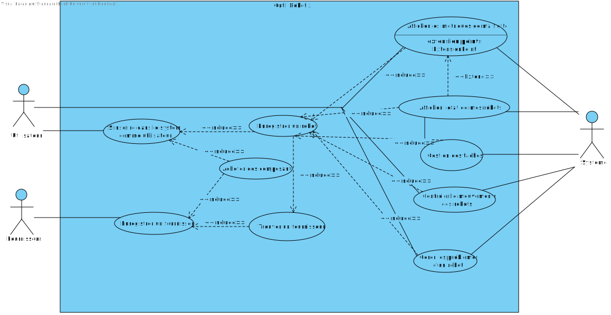

IFT 2255 - Été 2023 - Devoir 1
Information générale
Nom de l'équipe: Équipe RoNieTique
Lien vers dépôt GitHub
Lien vers fichiers Visual Paradigm
Nom: Farah Mohamed
Matricule: 20246646
Courriel: mohameffarah1@gmail.com
temps mis: 10 heures
Nom: Wing Sun Cheng
Matricule: 20231986
Courriel: wingsuncheng09@gmail.com
temps mis: 10 heures
Nom: Farley Jeannis
Matricule: 20250304
Courriel: farley.jeannis@umontreal.ca
temps mis: 10 heures
Nom: Erick Diaz
Matricule: 20233602
Courriel: erick.oswaldo.de.la.cruz.diaz@umontreal.ca
temps mis: 10 heures
Distribution des tâches
Soumissionaire: Amal Ben Abdellah
| Tâche |
Erick |
Wing |
Farah |
Farley |
| Glossaire |
3-4 mots par personne (25% chaque) |
| Diagramme de cas d'utilisation UML |
Chaque personne rajoute son cas (25% chaque) |
| Cas d'utilisation |
2-3 mots par personne (25% chaque) |
| Risques |
1-2 risques par personne (25% chaque) |
| Exigences non-fonctionnelles |
1-2 exigence par personne (25% chaque) |
Tâche 1 : Glossaire
Glossaire
Flotte de robots :Un ensemble de robots appartenant à un utilisateur prêt à accomplir des tâches.
Fournisseur : Personne appartenant à une entreprise qui vend des composants robotiques.
Outils Robotix: Logiciel qui permet à l'utilisateur de contrôler et d'entretenir des robots et de leur assigner des tâches pour effectuer diverses tâches et de communiquer avec des fournisseurs de composants robotiques.
CPU :puce électronique qui agit en tant que le cerveau d'un appareil électronique et acronyme anglais du terme "Central Processing Unit".
UUID : chaîne de caractères alphanumériques unique utilisée afin d'identifier une entité et acronyme anglais du terme "Universally Unique Identifier".
Tâche : une séquence d'actions (e.g., se déplacer, diffuser des sons, parler, écouter, afficher du texte ou des graphiques) d'un robot.
Memoire :composant informatique qui permet la décomposition des informations contenues dans le disque dur d'un ordinateur en fragments que le processeur peut manipuler.
Conception assistée par ordinateur : la conception assistée par ordinateur, ou CAO, rassemble des outils informatiques (logiciels et matériels) qui permettent de réaliser une modélisation géométrique d'un objet afin de pouvoir simuler des tests en vue d'une fabrication.
Langage de programmation : langage informatique, permettant à un être humain de décrire un algorithme sous forme du code source qui sera analysé par une machine, généralement un ordinateur.
Sécurisation du système : L'ensemble des méthodes utilisé pour sécuriser les informations des utilisateurs. Quelques exemples de cette pratique pourraient être la sérialisation des données ou encore l'authentification des utilisateurs.
Activité : Un évènement ou les robots reçoivent des tâches à faire. Les utilisateurs participent à diverses activités avec leur flotte de robots. Quelques exemples de ces activités seraient les jeux, l'éducation et la création.
Métriques : L'ensembles des données permettant d'analyser l'états de la flotte. Ces données peuvent se focaliser sur l'utilisation des ressources, la performances l'efficacité énergétique, l'état des robots etc…
Utilisateur : Client utilisant l'Outil Robotix. Un utilisateur n'est pas un fournisseur. Il interagit dans la majorité des cas d'utilisations et le système est construit pour répondre à ses besoins.
Tâche 2 : Diagramme de cas d'utilisation UML

Tâche 3 : Cas d'utilisation
Cas d'utilisation : Afficher l'état des mes robots.
But : Faire référence à l'évolution des données émises par les robots.
Préconditions :
- L'utilisateur a déjà un compte.
- L'utilisateur a déjà une liste de robots a gerer.
Acteurs : Utilisateur.
Scénario principal :
- L'utilisateur insère les données de son compte.
- Le système vérifie l'information.
- Le système obtienne la liste de robots liée à cet utilisateur.
- L'utilisateur demande l'information liée à chaque robot (position, vitesse, niveau de batterie, consommation CPU et mémoire).
- Le système affiche l'information demandée.
- L'utilisateur finit la session.
- Le système confirme la fermeture de session.
Scénario alternatif :
- 5.1 L'utilisateur demande l'historique des données de chaque robot.
- 5.2 Le système affiche l'information demandée.
- 5.3 Le scénario reprend à l'étape 6.
Scénario alternatif :
- 1.1 L'utilisateur insère les données incorrectes de son compte.
- 1.2 Le système affiche un message d'erreur.
- 1.3 Le scénario se termine
Cas d'utilisation : Trouver un fournisseur.
But : Naviguer à travers la liste des fournisseurs enregistrés en utilisant un
mécanisme de recherche et de filtre facilitant la localisation de fournisseurs spécifiques.
Préconditions :
- L'utilisateur a déjà un compte.
- Le fournisseur a été déjà inscrit.
Acteurs : Utilisateur.
Scénario principal :
- L'utilisateur insère les données de son compte.
- Le système vérifie l'information.
- L'utilisateur demande la liste de fournisseurs.
- Le système affiche la liste demandée.
- L'utilisateur filtre la liste de fournisseurs en inserant un type de robot.
- Le système affiche la liste filtrée.
- Le système affiche une liste de composants que le fournisseur peut fournir para chaque fournisseur.
- L'utilisateur finit la session.
- Le système confirme la fermeture de session.
Scénario alternatif :
- 1.1 L'utilisateur insère les données incorrectes de son compte.
- 1.2 Le système affiche un message d'erreur.
- 1.3 Le scénario se termine
Cas d'utilisation : Gérer les problèmes d'un robot
But : Verifier que le robot n'a pas de problèmes durant son utilisation et si il y a une anomalie, le système previent l'utilisateur
et propose une solution pour l'exécuter
Préconditions :
- L'utilisateur a déjà un compte.
- L'utilisateur a déjà une liste de robots a gerer.
- L'utilisateur est entrain de utiliser un robots.
Acteurs : Utilisateur.
Scénario principal :
- L'utilisateur controle le robot
- Le robot rencontre une anomalie
- le système effectue un scan du robot
- Le système obtien l'information du robot
- Le système affiche l'information a l'utilisateur sur l'erreur
- Le système propose une solution a l'utilisateur
- L'utilisateur execute la proposition pour le robot
- Le système fixe le robot
- Le système ferme l'alerte concernant l'anomalie
Scénario alternatif :
- 7.1 L'utilisateur decide de ne pas exécuter la proposition
- 7.2 Le scénario reprend à l'étape 6.
Cas d'utilisation :S'inscrire dans le système comme utilisateur
But :Inscription de l'utilisateur dans le système
Prérequis:
- L'utilisateur doit avoir un adresse courriel
- L'utilisateur doit avoir un numéro de téléphone
- L'utilisateur doit etre avec une compagnie
- L'utilisateur doit avoir le système Robotix
Acteurs : L'utilisateur
Scénario principal :
- L'utilisateur ouvre l'application Robotix
- L'utilisateur choisis de s'inscrire dans le système
- L'utilisateur donne son nom & prénom
- L'utilisateur donne son adresse courriel & son numéro de téléphone
- L'utilisateur donne le nom de son compagnie affiliée
- Le système vérifie la validité des informations
- Le système envoie une confirmation à l'adresse courriel
- L'utilisateur accept la confirmation
- Le système crée le compte pour l'utilisateur
Scénario alternatif :
- 2.1 L'utilisateur décide de se connecter dans son compte
- 6.1 Le système envoie un message un d'erreur
- 6.1a L'utilisateur n'insère pas de nom
- 6.1b L'utilisateur n'insère pas de prénom
- 6.1c L'utilisateur insère un adresse courriel invalide
- 6.1c L'utilisateur insère un numéro de téléphone invalide
- 6.2 Retour à l'étape 2
- 8.1 L'utilisateur n'accept pas la confirmation
- 8.1a Retour à l'étape 1
Cas d'utilisation : Afficher les métriques de ma flotte
But : Prendre connaissance des métriques liés à l'usage de chaque robot et sa flotte afin de mesurer correctement les activités de celle-ci.
Préconditions :
- L'utilisateur est connecté au système Robotix.
- L'utilisateur a déjà une liste de robots a gérer.
Acteurs : utilisateur et les robots .
Scénario principal :
- Le système obtient les métriques de la flotte de robots de l'utilisateur
- L'utilisateur décide de se renseigner sur les données liés à l'usage d'un robot spécifique.
- Le système affiche les information demandées.
- L'utilisateur termine sa session.
- Le système confirme la fin de la session.
Scénario alternatif :
- 2.1 L'utilisateur décide de se renseigner sur les données liés à sa flotte de robots(e.g., nombre de robots disponibles, état général, utilisation globale).
- 2.2 Le scénario reprend à l'étape 3.
Postconditions :
- Le système a enregistré la date et l'heure de la requête d'information.
Cas d'utilisation :Controler le mouvements des robots
But :Controler les robots à partir du système Robotix
Prérequis:
- L'utilisateur a déjà un compte.
- L'utilisateur a déjà une liste de robots a gerer.
Acteurs : L'utilisateur
Scénario principal :
- L'utilisateur insère les données de son compte.
- Le système vérifie l'information.
- Le système obtienne la liste de robots liée à cet utilisateur.
- L'utilisateur choisis le robots à controler
- L'utilisateur choisis l'option de mouvements pour le robot
- L'utilisateur insère une vitesse pour le robot
- L'utilisateur insère une direction pour le robot
- Le système vérifie l'information.
- Le système confirme l'information
- Le système envoie l'information au robot
Scénario alternatif :
- 5.1 L'utilisateur choisis d'utilisater le robot pour une autre tache
- 9.1 L'utilisateur à inserer des mauvaises données pour le mouvements du robot
- 9.2 Retour à l'étape 5
Cas d'utilisation : Acheter des composantes
But : Acheter des composantes pour construire un robot
Préconditions :
- L'utilisateur a déjà un compte.
- L'utilisateur a trouver un fournisseur
Acteurs : Utilisateur.
Scénario principal :
- L'utilisateur se connect dans son compte
- L'utilisateur ouvre la page du fournisseur choisis
- Le système affiche les composantes et le prix des materiaux à vendre selon la page du fournisseur
- L'utilisateur choisis des composante dans la liste à vendre des fournisseurs
- L'utilisateur àchete au moins un CPU et une autre composante dans la liste à vendre des fournisseurs
- Le système affiche le mode de payment pour l'utilisateur
- L'utilisateur insert ses informations pour le payment en ligne
- Le système confirme les informations
- Le systèmes envoient une alerte de confirmation de l'achat
- l'utilisateur reçoit la confirmation
- L'utilisateur finit la session
Scénario alternatif :
- 8.1 le système confirme qu'il y a des informations incorrectes
- 8.2 Le scénario reprend à l'étape 5.
Scénario alternatif :
- 4.1 L'utilisateur décide de ne rien choisir pour son panier d'achat
- 4.2 L'utilisateur ferme la page du fournisseur
- 4.3 L'utilisateur retourne à la page d'acceuil du logiciel
- 4.4 Le scénario se termine
Scénario alternatif :
- 1.1 L'utilisateur insère les données incorrectes de son compte.
- 1.2 Le système affiche un message d'erreur.
- 1.3 Le scénario se termine
Cas d'utilisation :Enregistrer un fournisseur
But :Ajouter des nouveaux fournisseur dans la base de donné
Prérequis:
- Le fournisseur doit posséder une compagnie
Acteurs : Fournisseur.
Scénario principal :
- Le fournisseur donne son nom, son adresse, son email et son téléphone.
- Le fournisseur donne le type de robot fabriqué.
- Le fournisseur donne le type de composantes fabriquées
- Le fournisseur donne la capacité de fabrication
- Le système vérifie les informations données
- Le système ajoute le fournisseur à l'environnement
Scénario alternatif :
- 5.1 Les système trouve une erreur
- 5.2 Le système envoie un message un d'erreur.
- 5.3 Le scénario se termine
Cas d'utilisation : Enregistrer un robot
But :Ajouter des nouveaux robots à la flotte
Prérequis:
- L'utilisateur a déjà un compte.
Acteurs : Utilisateur.
Scénario principal :
- L'utilisateur se connecte
- L'utilisateur entre le numéro de série du robot fourni par le fournisseur
- Le système confirme la présence du robot
- L'utilisateur identifie par un nom et un type le robot
- Le système ajoute le robot à l'inventaire de l'utilisateur
Scénario alternatif :
- 3.1 Le système ne trouve pas le robot.
- 3.2 Le système envoie un message un d'erreur.
- 3.3 Le système revient à l'étape 2 ou quitte.
Cas d'utilisation : Gestion des tâches.
But : Pouvoir créer et assigner des tâches aux robots en fonction de leur disponibilité et compétences.
Préconditions :
- L'utilisateur est connecté au système Robotix.
- L'utilisateur a déjà une liste de robots a gérer.
Acteurs : utilisateur et les robots .
Scénario principal :
- L'utilisateur crée une tâche spécifique pour un robot quelconque et lui assigne un horaire de début d'activités.
- Le système crée une chronologie des tâches au fur à mesure que celles-ci sont ajoutées
- Le système vérifie la disponibilité des robots liés à l'utilisateur et assigne la tâche au robot spécialisé.
- Les robots commencent à effectuer la tâche courante et les tâches futurs selon leur ordre chronologique.
- L'utilisateur termine sa session.
- Le système confirme la fin de la session.
Scénario alternatif :
- 1.1 L'utilisateur crée une tâche qui n'est pas réalisable avec les robots courants.
- 1.2 Le système affiche un message d'erreur.
- 1.3 Le scénario se termine.
Scénario alternatif :
- 4.1 Les robots commencent à effectuer la tâche courante en parallèle avec les autres du même horaire
- 4.2 Le scénario reprend à l'étape 5.
Postconditions :
- Le système est en veille et travaille en arrière-plan afin d'effectuer les tâches.
Tâche 4 : Risques et besoin non-fonctionnels
Besoin non-fonctionnelles :
- 1.1 Besoin non fonctionnel : Contrôler plusieurs robots en parallèle
- 1.2 Besoin non fonctionnel => Faire en sorte de gérer une large base de données. En utilisant par exemple Sql.
- 1.3 Besoin non fonctionnel: Performance. Il faudrait un système perfomant en utilisant des algorithme efficaces.
- 1.4 Besoin non fonctionel: Ajouter un simulateur des robots.
- 1.5 Besoin non-fonctionnel : Il faut que le système soit accessible en tout temps pour ne pas créer de problèmes face à l'activité des robots
Risques :
- 1.1 risque => catégorie: "Not getting the architecture right" =>
Il faut s'assurer que le logiciel permet la correcte communication avec les robots,
si jamais le langage de programmation choisi ne le permet pas,
il faudra changer de langage et réécrire tout le code.
- 1.2 Risque => catégorie: "Technical risks" => Le système peut perdre le contrôle du robot et celui-ci peut causer des dommages à l'environnement.
- 1.3 Risque => catégorie: "Technical risks" => Système peux etre affecter par des viruses ou être pirater. Il faut installer des software pour la protection du systeme
- 1.4 Risque => Sécurité des informations des utilisateurs. Il faudrait encrypter les données.
- 1.5 Risque => Utiliser les robots à mauvais escient => Il faudra s'assurer que, lors de la création de tâches, les robots ne soient pas utilisé afin de commettre de mauvais gestes.